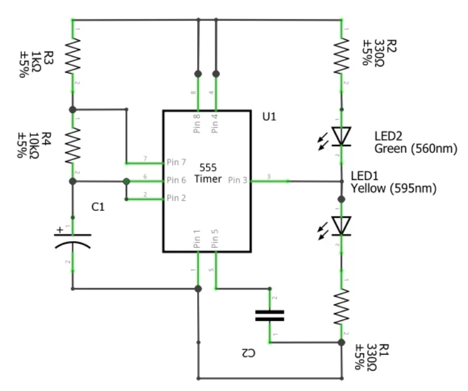
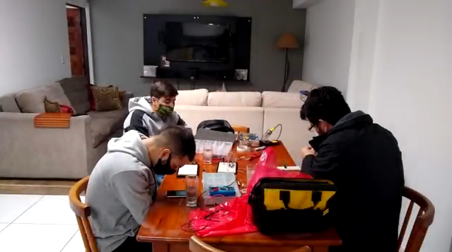
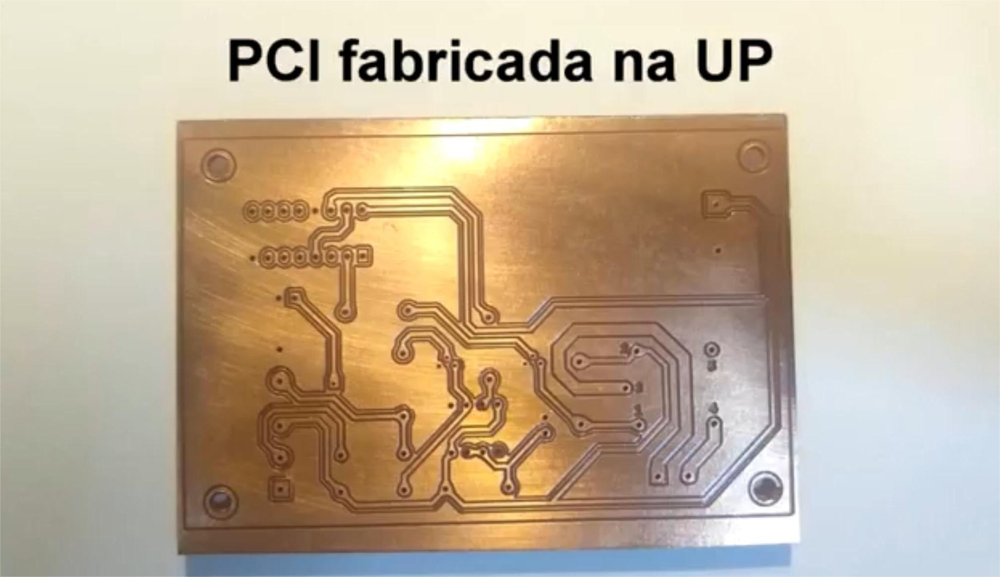
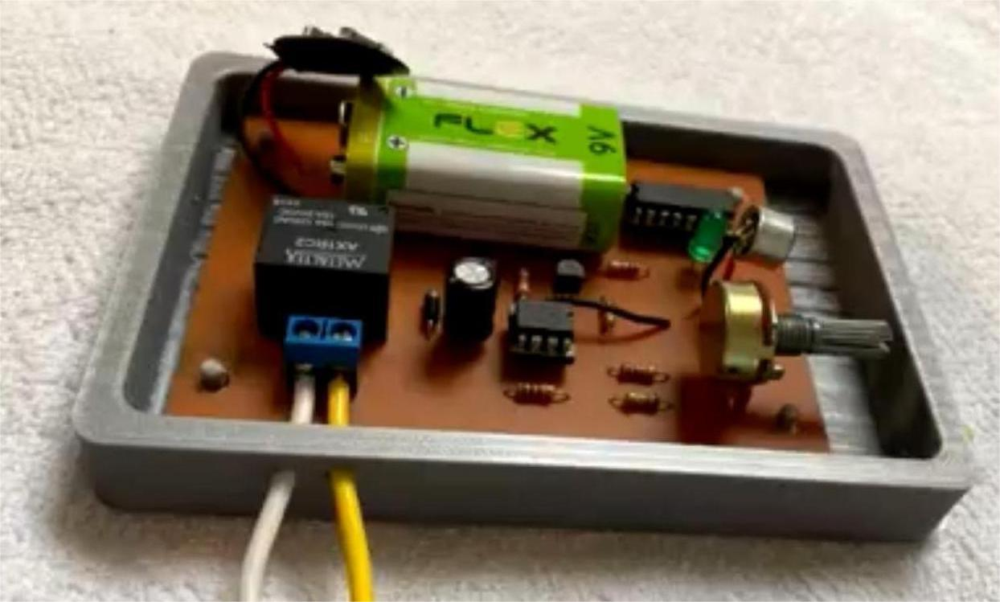
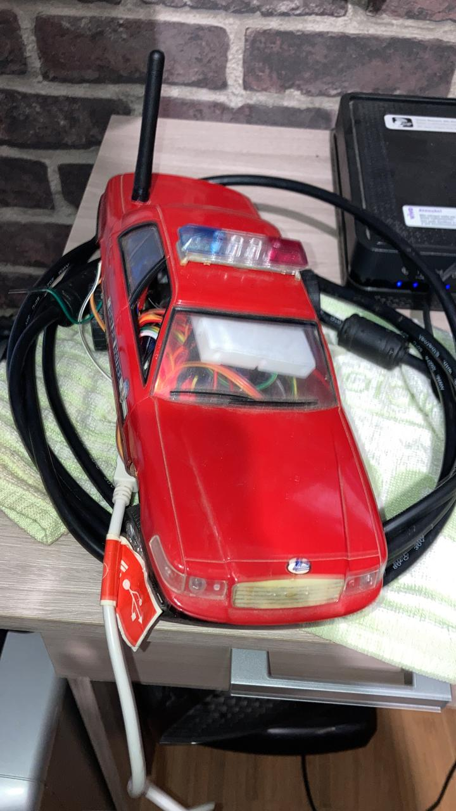
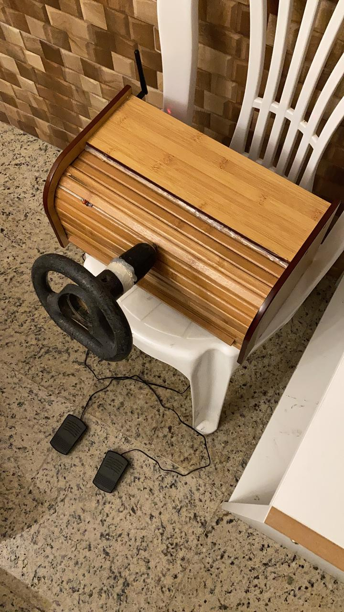
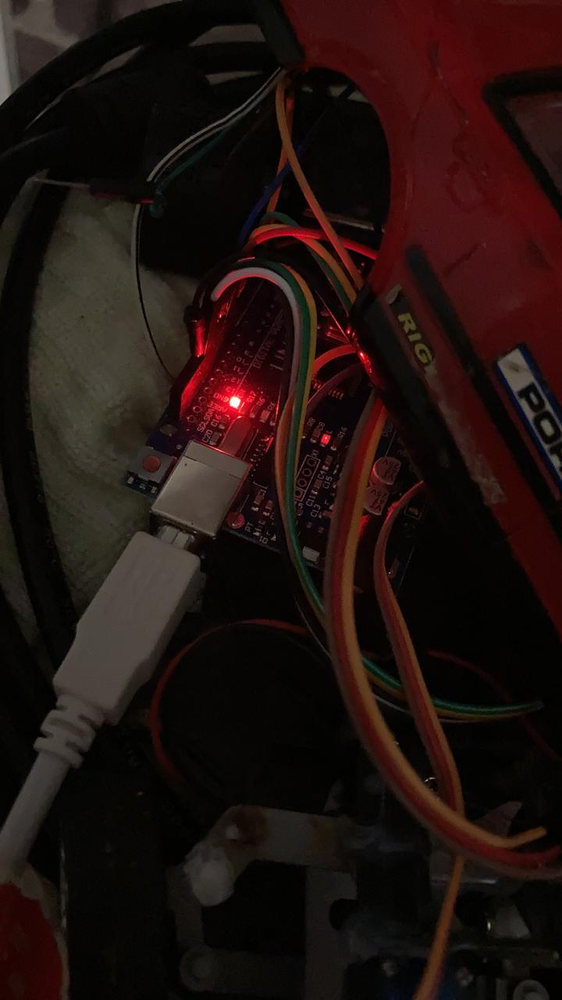

Projetos de Eletrônica
Aqui estão alguns dos projetos que desenvolvi na área de eletrônica, desde automação até circuitos digitais. Clique nas fotos para ver em tamanho maior.
Robô de Irrigação Pontual
| Ano | 2017 |
|---|---|
| Onde | IFPR, campus Curitiba |
| Apresentado | Feira IFTech e JoCIF |
| Equipe | Matheus Barbosa da Silva e colegas do IFPR |
Em 2017, participei do projeto de robótica no IFPR, onde desenvolvemos um robô irrigador inteligente. O sistema foi projetado para reduzir o desperdício de água nas plantações, identificando a necessidade de irrigação por sensores infravermelhos.
O robô era um veículo autônomo que media a umidade do solo e irrigava apenas onde necessário, reduzindo o consumo de água. Além disso, contava com um sistema de GPS para retornar à base quando a bateria estivesse baixa, onde era recarregado por energia solar.
Palavras-chave: Irrigação, Economia de Água, Automação Agrícola

- Anais da IFTech 2017 (PDF, o projeto está na página 16)
Esteira com Display Contador
| Ano | 2018 |
|---|---|
| Onde | Curso técnico, IFPR |
| Contagem | 00 a 99 |
Em 2018, desenvolvi um sistema de contagem utilizando eletrônica digital. O projeto consistia em uma esteira transportadora equipada com um display contador, capaz de registrar a passagem de objetos.
O protótipo foi construído com materiais simples, como tubos de rolo de pintura e lixas, para simular uma esteira real de baixo custo.
Componentes utilizados
- CI's 555 para controle do pulso
- CI's 4026 para comandar a contagem e exibição no display
- LEDs infravermelhos para detecção de passagem
- 2 displays de 7 segmentos para contagem de 00 a 99
- Motor de vidro elétrico de carro para movimentação da esteira
- Potenciômetro 100k Ohms
- Transistor Mosfet IRFZ46N


Interruptor por Palmas
| Onde | Universidade Positivo |
|---|---|
| Disciplina | Circuitos Elétricos II |
| Base | CI 555 e CI 4017 |
A realização desse projeto visa atender à atividade do primeiro bimestre da disciplina de Circuitos Elétricos II dos cursos de Engenharia Elétrica e da Computação da Universidade Positivo. A proposta docente era construir um circuito prático com pelo menos dez elementos básicos e a presença de capacitores ou indutores. A proposta de chaveamento por palmas foi escolhida para acionar elementos elétricos sem o contato direto com o interruptor.
Este projeto tem como objetivo trazer uma solução prática para o chaveamento de lâmpadas ou mecanismos elétricos, permitindo o acionamento através de palmas. O circuito foi testado e funcionou como esperado.
Componentes utilizados
- CI 555
- CI 4017
- Bateria 9v
- Potenciômetro 100k Ohms
- Resistores
- Transistores BC548
- Microfone de eletreto
- Capacitor e diodo
- Relé 12v




Vídeos
Documentos
- Apresentação (PDF)
- Análise do projeto (PDF)
Carrinho de Polícia com Cockpit de Ativação Remota
| Controle | Arduino UNO |
|---|---|
| Comunicação | Transmissor e receptor de RF |
| Código | Tinkercad |
Este projeto envolve a modificação de um carrinho de controle remoto tradicional. Retirei a placa de controle original e substituí por um novo sistema com Arduino, incluindo um servomotor com uma nova estrutura para controle de eixos das rodas, um novo motor de tração, giroflex com LEDs e um cockpit com volante, pedais de acelerador e freio e switch de ativação.
O carrinho foi adaptado com um servo motor para controle das rodas e um sistema de comunicação sem fio, com base no código desenvolvido no Tinkercad.
Componentes utilizados
- Motor de tração
- Servo motor 90g
- Tecla de ativação para LEDs
- LEDs azul e vermelho para giroflex
- Pedais para acelerador e freio
- Transmissor e receptor de RF
- Placas de Arduino UNO para controle
- Módulo relé
- Bateria 9v



